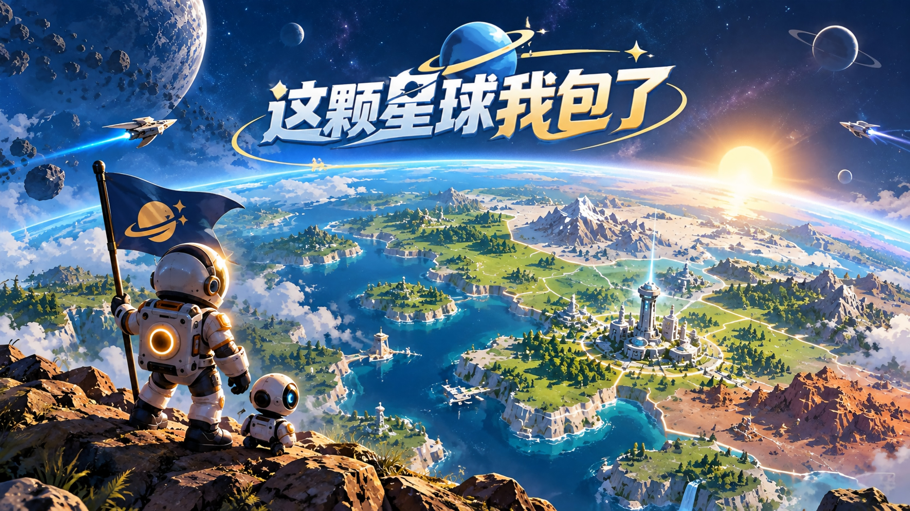

划一道线，拓一片星域
离开安全区、规划航线、闭合领地。观察敌群的行动，用时停、折跃与超频抓住开拓的时机。

驾驶探针划线圈地，在追击与截线之间寻找机会。把亲手开拓的土地交给殖民工程，让每一次归来，都看见家园的成长。
01 / 游戏特色
离开安全区、规划航线、闭合领地。观察敌群的行动，用时停、折跃与超频抓住开拓的时机。
发展殖民工程与科技，把开拓成果变成持续产出。手动挑战与自动殖民，构成两种相互支撑的节奏。
积累星核，点亮永久天赋。把成长带向下一片星域，再迎接星主试炼中的新挑战。
YOUR FRONTIER / YOUR HOME
从一条小小的航线，到逐渐成形的星际家园。开拓、建设、强化，下一次出发有了新的底气。
02 / 游戏画面
点击图片放大查看
画面来自游戏宣传素材，实际内容以游戏内为准。
TAPTAP / 获取游戏
TapTap 下载入口与二维码将在这里更新，敬请期待。